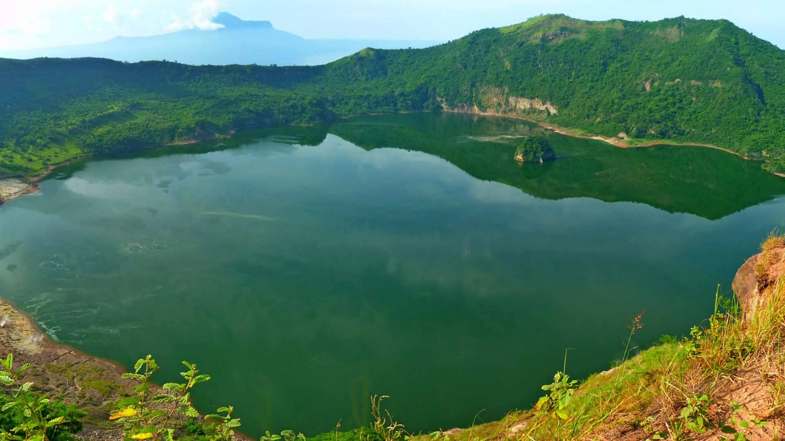
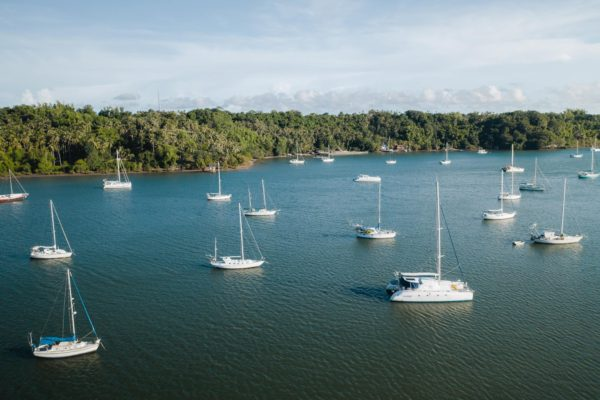

Tourist Spots
Siaton offers the tourist a great getaway with a long stretch of beaches along the coastal areas. That is why it comes to no surprise that Scuba Diving in Siaton is one of the many activities offered. There are also mountain lakes great for outdoor activities. Lake Balanan is the most famous in Siaton, about 15km away from the National highway and is suitable for outdoor recreational activities like swimming and camping. Another wonderful location for tourists is Antulang beach resort, which has white pebbles with clear waters featuring beautiful underwater scenery. The beach is perfect for snorkeling, scuba diving, as well as sightseeing with the interesting and amazing rock formation on the beach.
1. Balanan Lake
Lake Balanan is a lake situated in Siaton, Negros Oriental in the Philippines. It is a freshwater lake in the forested mountains of the southern portion of the island of Negros, with a shape resembling a figure of eight, the narrowest point between the two main portions of the lake being only 90 metres (300 ft) wide. The lake is surrounded by mountain ranges, and is fed by three tributaries, all located in the northern end. These are the Lamarao Creek at the northeastern corner with two waterfalls, the Balanan Creek at the middle of the northern end with another waterfall, and the Nasig-id Creek at the northwestern end.
2. Antulang Beach

There is only one word to describe this place – breathtaking! 40 kilometers south of Dumaguete City, Antulang Beach Resort lies suspended on a ten sprawling hectares of sheer cliffs. Their swimming pools and premium rooms are positioned right on the cliffs’ edge, ensuring guests a commanding view of an endless sea. The winding staircases lead directly to a kilometer’s stretch of isolated white sand beach strewn with large, natural rock formations.
3. Tambobo Beach
Tambobo Bay, officially Bonbonon Bay, occupies a lovely part of southern Negros near the town of Siaton and is a great place to be based for sailing, surfing, and relaxing.
The bay is a perfect natural harbor, being protected from the full force of typhoon winds, and is a popular natural boating anchorage in the Visayas. It is surrounded by pristine jungle and although the beaches aren’t the best, the range of activities on offer makes up for it.